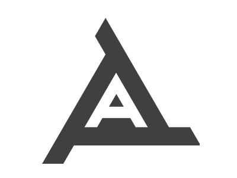
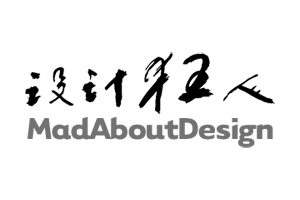

Hello, I'm Kiat Lim
Designing and building visually appealing, user-centered and intuitive web experience has been my bread and butter for the past 10 years.
In my present role as the UX Director at Pixel Onion, I lead the UX Design team where we deliver delightful web experiences across a wide range of sectors including education, hospitality and not-for-profit organisations using Drupal. Some notable clients we have worked with include:
- Singapore Management University (SMU)
- Mediacorp
- COMO Hotels and Resorts
- World Vision International
- Singtel
- PIL Logistics
On the side, I organise regular meet-ups for the Interaction Design Association (IxDA) Singapore chapter which aims to foster the knowledge exchange and networking among UX practitioners in Singapore.
In 2016, I was also part of the organising committee for the Agile Singapore Conference which drew a huge attendance of over 400 agile practitioners, software engineers, project managers and senior management from across the Asia Pacific region.
Work Experience
Partner / UX Director, Pixel Onion Pte Ltd
In 2011, I co-founded Pixel Onion, a digital agency focused on designing and building delightful experiences on Drupal.
We revamped several high profile websites including Singapore Management University, Singtel.com and COMO Hotels and Resorts on Drupal.
My role as the UX Director focuses on leading the design and UX activities within the company as well as coaching and mentoring the design team which currently consists of a UX researcher and a UX designer.

Partner, ARIGIN Pte Ltd
Together with 3 classmates, we co-founded a creative branding agency where we design and conceptualize brand communications for SMEs. My role focuses on designing and developing websites and client servicing.

Senior Designer, MadAboutDesign Pte Ltd
- Led the design activities for the digital projects in the agency.
- Won the pitch for the revamp of Hardwarezone.com and designed the overall user experience revamp for the highly visited technology portal
Web Designer, DV9 International Pte Ltd
- First job after National Service
- Focused on designing web concepts for various SME clients such as Noel Gifts, TravelPak, United Square etc.
Community Work
- Local chapter organiser for Interaction Design Association (IxDA)
- Webmaster for Cat Welfare Society
- Co-organised Agile Singapore Conference 2014 & 2016
- Meetup organiser for Drupal Developer Network Singapore
- Organised DrupalCamp Singapore 2014
Speaking engagements
UX for IT Students
Did a presentation with about 80 School of IT diploma students on the importance of UX and how they can embrace an user-centered mindset in their work and career in future.
UX Design in an Agency
Did a guest sharing on the final day of a 3 days UX design course with a class of over 25 adult learners on Pixel Onion's UX design processes and approach to delivering delightful web experiences.
UX Improvements in Drupal 8
Did a webinar presentation to the Srijan web community, a Drupal specialist based in India on the UX improvements in Drupal 8.
Elements of a good Web Experience
Did a presentation to the community on what makes a good web experience at Toa Payoh Public Library.
Education
Certified Scrum Master, Scrum Alliance
- Completed the Certified Scrum Master course by Odd-e Pte Ltd
Diploma in Digital Media Design (Interactive Media), Nanyang Polytechnic
- Awarded Bronze and Silver in 4As Creative Student Awards
- Revamped the Nanyang Polytechnic's public website
Get in touch
Open for various opportunities, partnership, mentoring / coaching and speaking engagements.